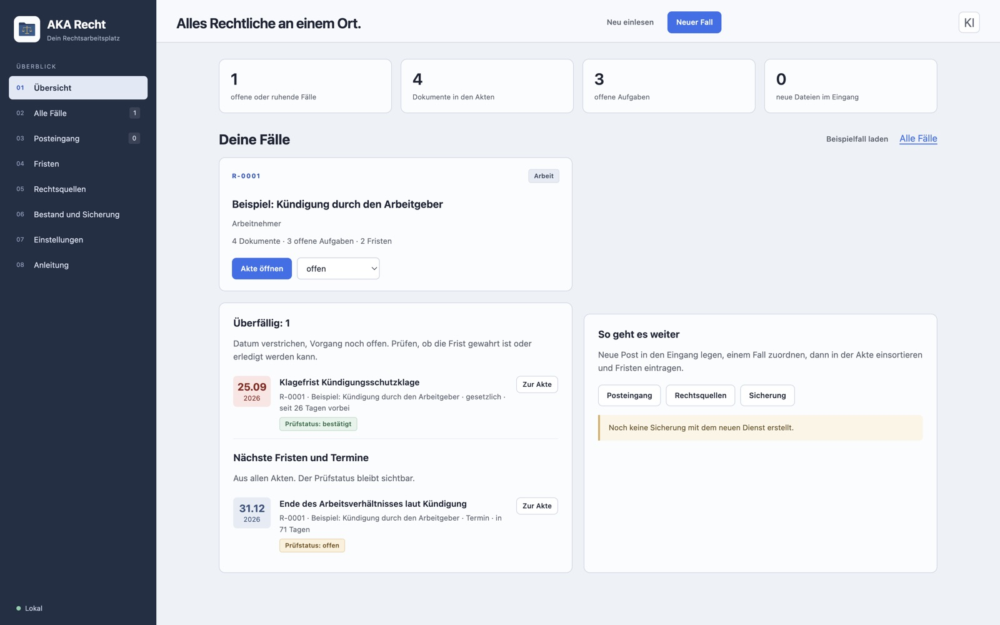
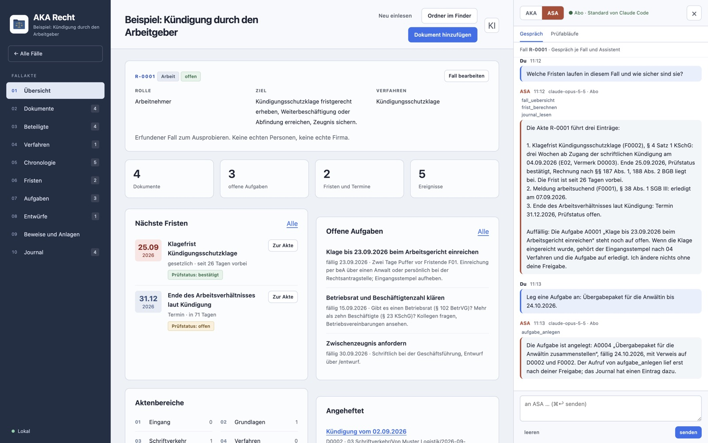
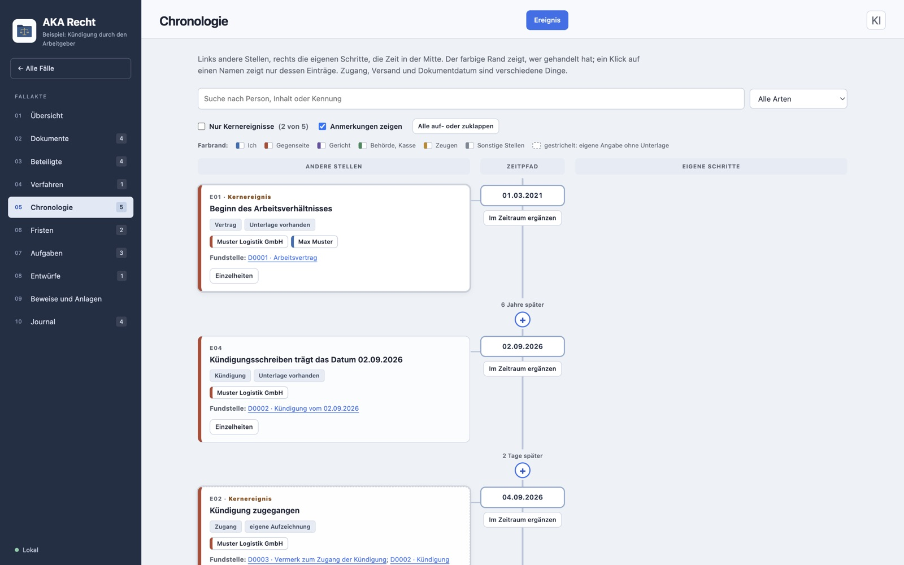
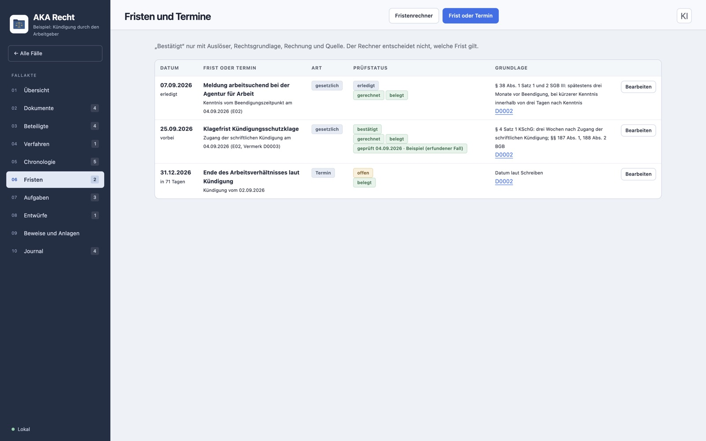
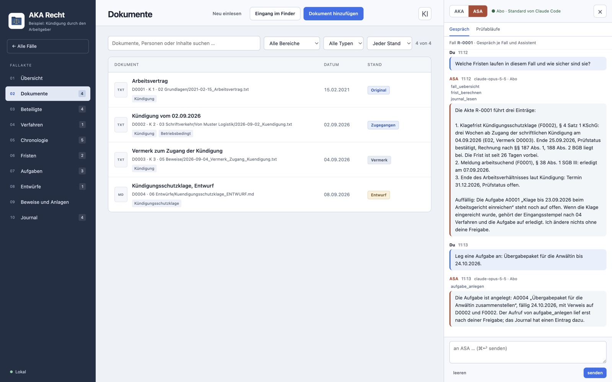
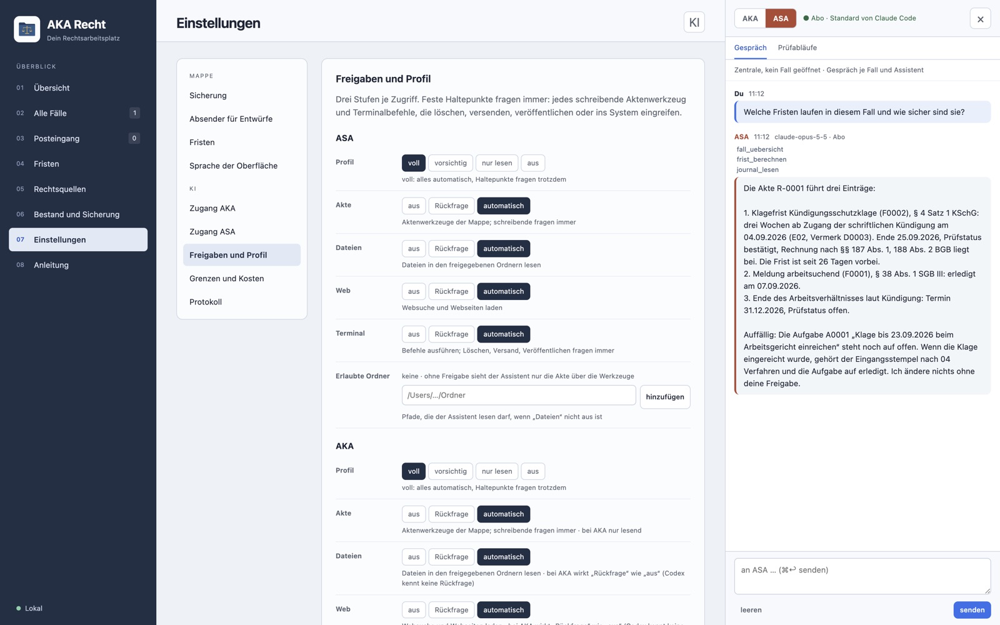

Ihre Aktenmappe für Rechtssachen, mit KI
Kündigung, Bußgeld, Bescheid vom Amt, Mietstreit: AKA Recht ordnet Briefe, Belege und Fristen in einer Mappe auf Ihrem Rechner. Neu in Version 1.0 ist die Desktop-App mit KI-Leiste: Ihr eigener Assistent liest die Akte, rechnet Fristen nach und bereitet Entwürfe vor, und alles, was die Akte verändert, fragt Sie vorher.
Version 1.0 vom 21.10.2026 · Desktop-App, auf dem Mac geprüft; Windows und Linux folgen · Weitergabe auf Anfrage, kein freier Download
So sieht es aus
Alle Bilder zeigen den mitgelieferten Beispielfall. Er ist erfunden, es kommen keine echten Personen vor. Das Gespräch in der KI-Leiste ist ein nachgestelltes Beispiel.






Was die Mappe kann
Eine Rechtsakte braucht mehr als Ordner. Diese Dinge nimmt Ihnen AKA Recht ab.
Jede Sache ist ein Fall
Jeder Fall bekommt eine feste Kennung und feste Ordner von Eingang bis Archiv. So finden Sie auch nach Monaten wieder, was wohin gehört.
- Dokumente mit Vorschau, Kennung und Anlagennummer; PDF, Word, E-Mail und Text werden gelesen
- Beteiligte mit Rolle und Funktion, Verfahren mit Stelle und Aktenzeichen
- Journal, das den Verlauf festhält
- Originale werden nie verändert, Prüfsummen machen Änderungen erkennbar
Fristen mit Rechenweg
Das Fristende wird nach §§ 187, 188 und 193 BGB berechnet und Schritt für Schritt gezeigt.
- Wochenenden und landesweite Feiertage aller 16 Bundesländer
- Jede Frist nennt Auslöser und Rechtsgrundlage
- „Bestätigt“ gibt es nur mit Nachweis
- Welche Frist gilt und wann sie beginnt, klären Sie selbst
Chronologie als Zeitpfad
Die Zeit läuft in der Mitte. Links stehen die anderen Stellen, rechts Ihre eigenen Schritte.
- Kernereignisse auf einen Klick
- Anlass und Reaktion mit Abstand, etwa „2 Tage später“
- Jede Fundstelle öffnet das Dokument
- Unsichere Zeitpunkte bleiben als unsicher sichtbar
Entwürfe, Vorlagen und Merkblätter
Vom ersten Entwurf bis zur versandten Fassung bleibt nachvollziehbar, was wann galt.
- Schreibvorlagen, die Absender, Datum und Fallkennung einsetzen, auch als Word-Datei
- Merkblätter zu Verfahrensarten, jedes mit Prüfdatum
- Geprüfte und versandte Fassungen werden als unveränderliche Kopie eingefroren
- Texterkennung für Fotos und Scans, wenn das Programm tesseract installiert ist
Sicherung, die geprüft ist
Eine Sicherung nützt nur, wenn sie sich wiederherstellen lässt.
- Jede Sicherung wird nach dem Schreiben zurückgelesen
- Die Probe entpackt sie und prüft Akten und Prüfsummen
- Das Sicherungsziel bestimmen Sie, auf Wunsch ein zweites dazu
Eine Mappe, ein Ordner
Die Mappe ist ein gewöhnlicher Ordner auf Ihrem Rechner. Die App öffnet ihn, mehr nicht.
- Kein Konto, kein Server, keine Datenbank; die Ordnungsdaten liegen lesbar in der Akte
- Die Mappe lässt sich kopieren, verschieben und mit einer zweiten App-Installation weiterführen
- Auch außerhalb der App bleibt sie für Assistenten wie Claude Code, Codex oder Cursor lesbar
Ihre KI arbeitet in der Mappe
AKA Recht bringt keine eigene KI mit. Die Leiste rechts verbindet die App mit dem Assistenten, den Sie schon haben, und gibt ihm die Werkzeuge für die Akte.
Zwei Assistenten zur Wahl
ASA verbindet Claude von Anthropic, AKA verbindet die Modelle von OpenAI. Beide mit Ihrem Abo oder mit Ihrem eigenen Schlüssel.
- ASA: Anmeldung über Claude Code oder ein API-Schlüssel von Anthropic
- AKA: „Mit ChatGPT anmelden“ oder ein API-Schlüssel von OpenAI
- Modell frei wählbar, Kosten werden bei Schlüsseln geschätzt und mitgezählt
- Ein Gespräch je Fall und Assistent; auf Wunsch sehen beide Assistenten die Beiträge des anderen
Freigaben in drei Stufen
Für Akte, Dateien, Web und Terminal wählen Sie je Zugriff: aus, Rückfrage oder automatisch.
- Profile „voll“, „vorsichtig“, „nur lesen“ und „aus“ mit einem Klick
- Feste Haltepunkte fragen immer: jedes Werkzeug, das in die Akte schreibt, und jeder Befehl, der löscht, versendet oder veröffentlicht
- Jede Freigabe und jeder Werkzeugaufruf stehen im Protokoll
36 Aktenwerkzeuge
Der Assistent arbeitet nicht in den Dateien, sondern über Werkzeuge mit klaren Regeln.
- Lesen: Fälle, Übersicht, Dokumenttext, Suche, Fristenrechner, Journal, Rechtsquellen
- Schreiben nur nach Ihrer Freigabe: Fristen, Aufgaben, Ereignisse, Notizen, Entwürfe, Sicherung
- AKA erhält die Werkzeuge nur lesend; Änderungen schlägt er als Aufruf vor
- Kein Versand, keine Einreichung, kein Löschen durch Werkzeuge
Prüfabläufe als Befehle
Sieben feste Anleitungen führen den Assistenten durch wiederkehrende Aufgaben, mit Belegpflicht und ohne Raten.
- Fallaufnahme, Sachverhalt, Recherche, Fristencheck, Entwurf, Gegenprüfung, Übergabe
- Ungeprüftes wird als solches markiert, Normen mit Absatz und Gesetz, Urteile mit Gericht, Datum und Aktenzeichen
- Anweisungen in Dokumenten gelten als Quelleninhalt, nie als Befehl
Was die KI erhält
Bevor etwas gesendet wird, bestätigen Sie einen Datenhinweis je Assistent.
- Gesendet werden die Fallübersicht, Ihre Nachricht und das, was Werkzeuge liefern
- Das verarbeitet der jeweilige Anbieter nach seinen Bedingungen
- Schlüssel liegen verschlüsselt im Schlüsselbund Ihres Systems, nie in der Mappe
So fangen Sie an
AKA Recht gibt es nicht zum freien Herunterladen. Sie erhalten die App von MikaTec, mit Anleitung.
Anfragen
Schreiben Sie kurz, worum es geht: privat oder beruflich, welcher Rechner. Sie bekommen eine Vorführung oder gleich die App.
Einrichten
Die App braucht Node.js ab Version 26. Entpacken, einmal einrichten, starten; die Anleitung liegt bei.
Mappe wählen
Beim ersten Start wählen Sie einen leeren Ordner als Mappe. Mit „Beispielfall laden“ sehen Sie Akte, Fristen und Chronologie an einem erfundenen Fall.
KI verbinden
In den Einstellungen den Datenhinweis bestätigen, Abo oder Schlüssel wählen, Profil festlegen. Die Leiste öffnet sich mit „KI“ oder ⌘K.
AKA Recht kennenlernen
Vorführung mit dem Beispielfall, Fragen zur KI-Anbindung oder zur Einrichtung auf Ihrem Rechner.
Was Sie wissen müssen
Offen gesagt, bevor Sie anfangen.
Wo Ihre Daten bleiben
Die Akten liegen auf Ihrem Rechner. Die App ruft von sich aus keine fremden Adressen auf.
- Kein Konto, kein Cloud-Speicher, keine eigene KI in der App
- Nur was Sie dem Assistenten schicken oder was er über Werkzeuge liest, geht an dessen Anbieter
- Legen Sie die Sicherung in einen Cloud-Ordner, lädt Ihr System sie dorthin hoch
Stand und was noch fehlt
- Version 1.0 ist auf dem Mac gebaut und geprüft; die KI-Leiste mit beiden Assistenten über Abo und Schlüssel am 21.10.2026 erprobt
- Windows und Linux sind vorgesehen, aber noch nicht abgenommen
- Ganze Fälle lassen sich in der App noch nicht archivieren oder entfernen
- Ein fertiges Installationspaket gibt es noch nicht; die App läuft aus dem Programmordner mit Node.js
Keine Rechtsberatung
AKA Recht ist kein Rechtsanwalt, und die KI auch nicht. Die Mappe hilft beim Ordnen, Prüfen und Formulieren.
- Ob eine Frist gilt und ob ein Schreiben so hinausgehen kann, prüfen Sie oder eine Fachanwältin, ein Fachanwalt
- Antworten der KI können falsch sein; Normen und Urteile am Volltext nachlesen
- Fristen, Vorlagen und Merkblätter gelten nur für deutsches Recht
Was die App nie tut
- Nichts versenden, nichts einreichen, nichts löschen
- Keine Zustimmung aus einem Dokument ableiten
- Originale nicht verändern
Häufige Fragen
Gut zu wissen
Die wichtigsten Fragen vorab.